Praktikum ini bertujuan supaya mahasiswa mampu mengelola state pada aplikasi Flutter, yaitu data yang dapat berubah selama aplikasi berjalan dan memengaruhi tampilan. Aplikasi yang dibangun adalah ResepKu. Setelah menyelesaikan praktikum, mahasiswa diharapkan mampu:
-
membuat state lokal dengan
StatefulWidgetdansetState()pada fitur jumlah porsi di halaman detail; - menjelaskan keterbatasan state lokal ketika satu data dibutuhkan oleh banyak widget dan halaman;
-
membuat state global dengan package
provider(ChangeNotifierdanMultiProvider) pada fitur favorit; -
membaca state dengan
context.watch,context.read, danConsumerdi beberapa halaman.
Pertanyaan utama yang dijawab praktikum ini: jumlah porsi hanya dibutuhkan satu halaman, sedangkan daftar favorit dibutuhkan oleh daftar resep, badge di AppBar, halaman detail, dan halaman Favorit. Di mana masing-masing state sebaiknya disimpan? Jawabannya dibuktikan dengan aplikasi ResepKu yang berjalan.
State adalah data yang dapat berubah selama aplikasi berjalan dan memengaruhi tampilan, dengan prinsip UI = f(state): tampilan adalah hasil dari data. Ketika data berubah, tampilan harus dibangun ulang. Flutter membagi state menjadi dua jenis menurut siapa yang membutuhkannya.
| Aspek | setState() | Provider |
|---|---|---|
| Untuk | State lokal (ephemeral), dipakai satu widget | App state, dipakai banyak widget dan halaman |
| Contoh di ResepKu | Jumlah porsi di halaman detail | Daftar resep favorit |
| Tempat data | Field di class State |
Class yang meng-extend ChangeNotifier
|
| Memberi tahu UI |
setState(() { ... })
|
notifyListeners()
|
| Membaca data | Langsung dari field |
context.watch<T>() di
build(),
context.read<T>() di callback
|
setState dan siklus StatefulWidget. Widget yang
datanya berubah dibuat sebagai StatefulWidget dengan
class State terpisah. Nilai awal diisi pada
initState(), data milik widget dibaca lewat
widget.namaField, dan setiap perubahan data dibungkus
setState() supaya Flutter menjalankan ulang
build(). Ketika halaman ditutup, objek State dibuang
bersama datanya.
Provider. Package provider menyimpan
state di luar widget tampilan, pada class yang meng-extend
ChangeNotifier. Setelah data berubah,
notifyListeners() memberi tahu semua widget yang
sedang "mendengarkan". ChangeNotifierProvider membuat
dan menyediakan objek tersebut ke seluruh subtree di bawahnya,
sedangkan MultiProvider memungkinkan beberapa
provider dipasang sekaligus.
-
context.watch<T>()dipakai di dalambuild(): widget ikut rebuild ketika data berubah. -
context.read<T>()dipakai di dalam callback (onPressed,onTap): hanya memanggil method tanpa mendengarkan perubahan. -
Consumer<T>adalah bentuk widget daricontext.watch; fungsibuilder-nya dijalankan ulang setiap kalinotifyListeners()dipanggil.
Posisi provider di widget tree. Halaman yang
dibuka dengan Navigator.push menjadi route yang
sejajar dengan halaman pemanggilnya, bukan anaknya. Agar semua
route dapat mengakses provider,
ChangeNotifierProvider harus dipasang di atas
MaterialApp.
- Laptop / Komputer dengan Flutter SDK (versi stable) dan Dart terinstall
- Visual Studio Code (Code Editor) dengan ekstensi Flutter & Dart
- Chrome Browser / Android Emulator sebagai target device untuk menjalankan aplikasi
-
Koneksi internet untuk menjalankan
flutter pub add provider - Package
provider - Modul Praktikum Aplikasi Mobile — Praktikum 6: State Management pada Aplikasi ResepKu
Praktikum dikerjakan dalam tiga bagian pada satu project
ResepKu. Bagian A menyiapkan
project dan fitur jumlah porsi dengan setState().
Bagian B adalah eksperimen yang memperlihatkan
keterbatasan state lokal untuk fitur favorit.
Bagian C memindahkan state favorit ke
Provider dan menambah badge serta halaman Favorit.
Urutan pengerjaan dijaga: Checkpoint 1 diambil di akhir Bagian A
sebelum recipe_tile.dart diganti pada Bagian B.
2411531002 • Saskia Alifah), sehingga identitas ikut terekam di semua screenshot. Footer
dipasang sekali lewat parameter builder pada
MaterialApp dan tidak pernah dihapus pada
langkah-langkah berikutnya.
Langkah pertama adalah membuat project Flutter bernama
resepku dan menyiapkan folder untuk memisahkan tiap
jenis file.
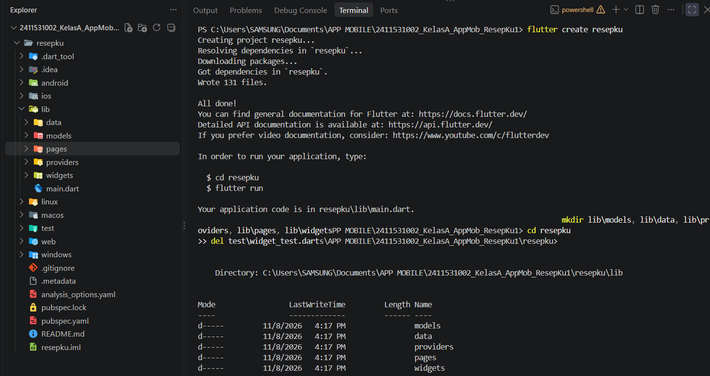
-
Buka terminal di folder kerja (misalnya Documents), lalu
jalankan
flutter create resepku. Perintah ini membuat project baru lengkap dengan template counter. Namaresepkupenting karena menjadi awalan importpackage:resepku/...pada semua file. -
cd resepku— masuk ke folder project, sehingga perintah berikutnya dijalankan di dalam project. -
code .— membuka folder project di Visual Studio Code. -
mkdir lib\models lib\data lib\providers lib\pages lib\widgets(Windows) — membuat lima folder sekaligus. Folder juga dapat dibuat lewat klik kanan padalibdi Explorer. -
del test\widget_test.dart(Windows) — menghapus test bawaan. -
Lima folder di
lib/:models(class data),data(data dummy),providers(state global),pages(halaman penuh), danwidgets(potongan tampilan yang dipakai ulang). -
test/widget_test.dartdihapus karena merujuk classMyAppbawaan template yang nanti digantiResepKuApp, sehingga editor akan menampilkan error. Praktikum ini belum memakai testing.
Model adalah class yang merepresentasikan satu resep.
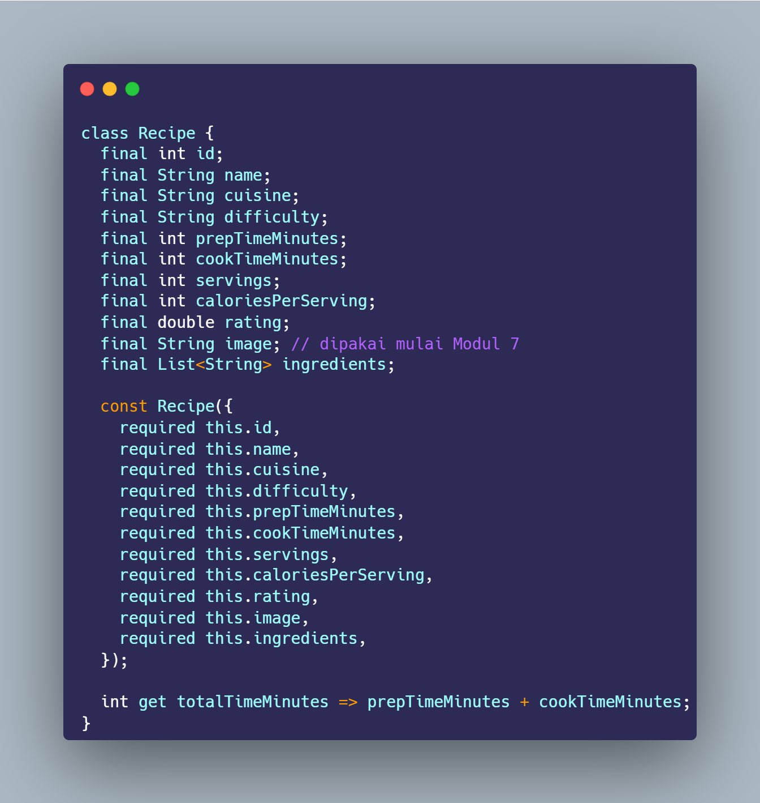
-
Field
final:id,name,cuisine,difficulty,prepTimeMinutes,cookTimeMinutes,servings,caloriesPerServing,rating,image, daningredients(List<String>). Fieldimagebaru dipakai pada Modul 7. -
const Recipe({required ...})— constructor konstan yang mewajibkan semua data diisi, sama seperti konsep passing data pada Praktikum 4. -
int get totalTimeMinutes => prepTimeMinutes + cookTimeMinutes;— getter yang berperilaku seperti field tetapi nilainya dihitung, dan dipanggil tanpa tanda kurung.
Recipe dari langkah A.2.
Enam resep contoh disiapkan sebagai data. Isinya sama dengan enam resep pertama di dummyjson.com/recipes, sehingga pada Modul 8 data yang sama dapat diambil dari API tanpa mengubah tampilan.
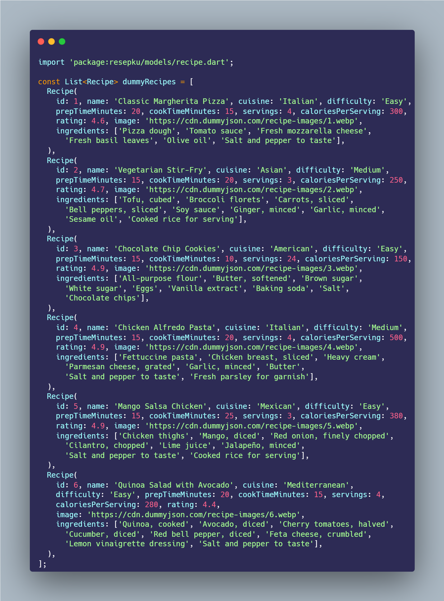
-
import 'package:resepku/models/recipe.dart';— memuat classRecipe. -
const List<Recipe> dummyRecipes = [...]— daftar konstan berisi enam objekRecipe. -
Resep pertama, Classic Margherita Pizza,
memiliki
servings: 4dancaloriesPerServing: 300. Dua nilai ini dipakai pada Checkpoint 1: porsi 6 menghasilkan 6 × 300 = 1800 kkal.
Footer identitas dibuat lebih dulu karena akan dipasang pada
main.dart dan tampil di setiap halaman.
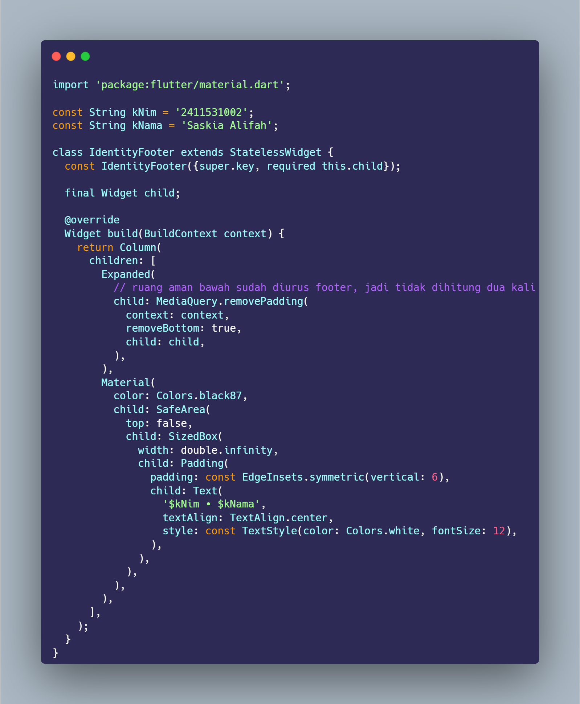
-
const String kNim = '2411531002';danconst String kNama = 'Saskia Alifah';— identitas yang ditampilkan. -
IdentityFooter({required this.child})— widget pembungkus yang menerima halaman sebagaichild. -
ColumnberisiExpanded(tempat halaman) di atas danMaterial(footer) di bawah. -
MediaQuery.removePadding(removeBottom: true, ...)— ruang aman bawah sudah diurus footer, sehingga halaman tidak menghitungnya dua kali. -
Footer:
Material(color: Colors.black87)denganSafeArea(top: false), laluText('$kNim • $kNama')berwarna putih, ukuran 12, rata tengah.
IdentityFooter dari
langkah sebelumnya dipasang di sini lewat builder.
File main.dart diganti agar menjalankan
ResepKuApp dan memasang footer.
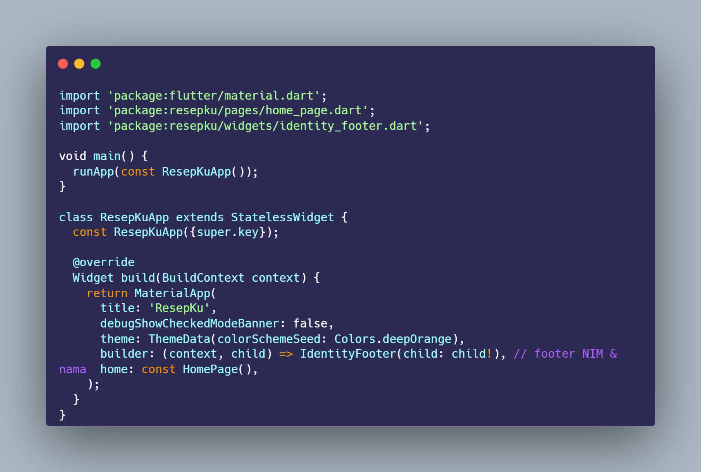
-
runApp(const ResepKuApp())— menjalankan aplikasi. -
theme: ThemeData(colorSchemeSeed: Colors.deepOrange)— membuat skema warna Material 3 dari satu warna dasar. -
builder: (context, child) => IdentityFooter(child: child!)—buildermembungkusNavigator, sehingga footer tampil di semua halaman (Home, Detail, Favorit, dan halaman latihan) tanpa ditambahkan ke tiapScaffold. -
home: const HomePage()— halaman pertama.
Halaman Home menampilkan daftar semua resep.
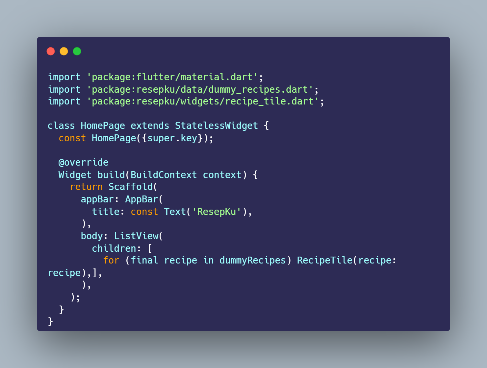
-
HomePageberupaStatelessWidgetkarena belum menyimpan data yang berubah. -
AppBar(title: const Text('ResepKu'))— judul halaman. -
ListView(children: [for (final recipe in dummyRecipes) RecipeTile(recipe: recipe)])— perulangan di dalam daftar yang membuat satuRecipeTileuntuk tiap resep padadummyRecipes(A.3).
RecipeTile dipanggil
oleh HomePage (langkah sebelumnya) dan membuka
DetailPage yang dibuat pada A.5.
Setiap baris resep dibuat sebagai widget tersendiri.
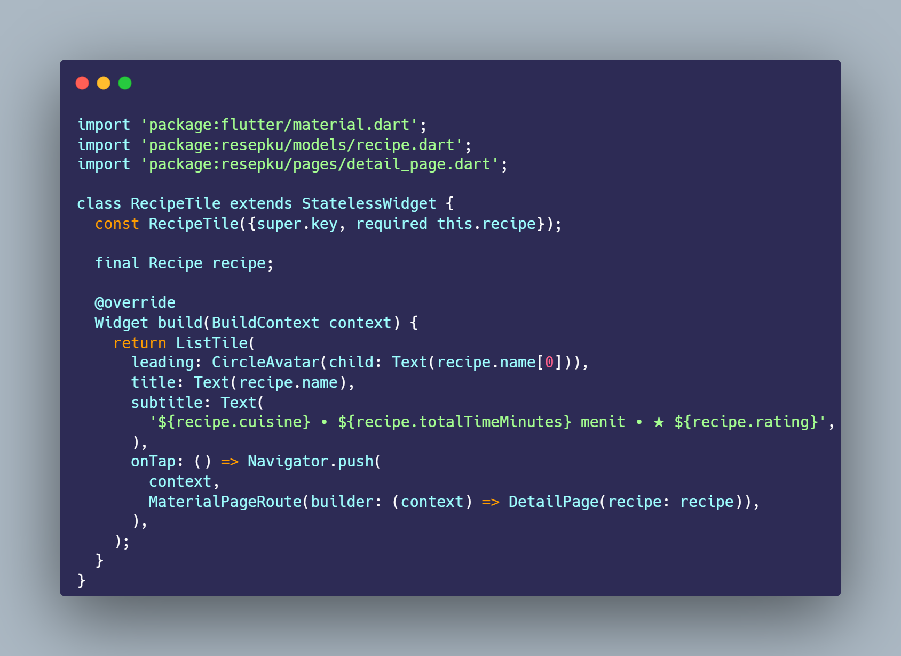
-
RecipeTile({required this.recipe})— menerima satuRecipelewat constructor. -
leading: CircleAvatar(child: Text(recipe.name[0]))— avatar berisi huruf pertama nama resep. -
titledansubtitle— nama resep dan teks '${recipe.cuisine} • ${recipe.totalTimeMinutes} menit • ★ ${recipe.rating}', yang memakai getter dari A.2. -
onTap—Navigator.pushdenganMaterialPageRoutemenujuDetailPage(recipe: recipe), konsep yang sama dengan Praktikum 4.
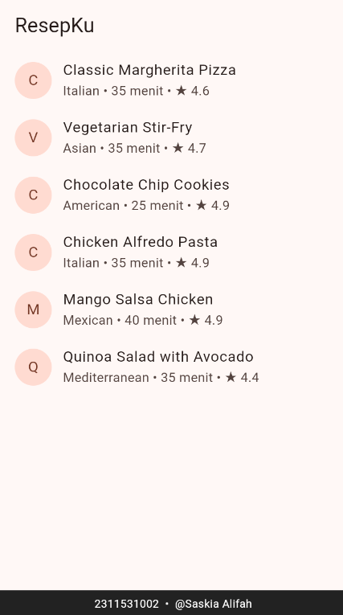
Aplikasi menampilkan enam resep dalam ListView,
satu RecipeTile untuk setiap objek pada
dummyRecipes. Setiap baris terdiri dari avatar
berisi huruf pertama nama resep (recipe.name[0]),
nama resep sebagai judul, dan subjudul berformat
cuisine • totalTimeMinutes menit • ★ rating.
Contohnya Classic Margherita Pizza tampil sebagai
Italian • 35 menit • ★ 4.6 karena 20 menit persiapan
ditambah 15 menit memasak.
Footer 2411531002 • Saskia Alifah terlihat di bawah
halaman karena dipasang lewat parameter
builder pada MaterialApp. Belum ada
ikon hati maupun badge di AppBar karena fitur favorit baru
dibuat pada Bagian C.
DetailPage dibuka
oleh onTap pada RecipeTile (A.4), dan
widget.recipe adalah objek Recipe yang
dikirim dari sana.
Halaman detail memakai StatefulWidget karena jumlah
porsi berubah ketika tombol + atau − ditekan. Tiga hal yang
diperhatikan: nilai awal diisi di initState(), data
milik widget diakses lewat widget.recipe, dan
setiap perubahan data dibungkus setState().
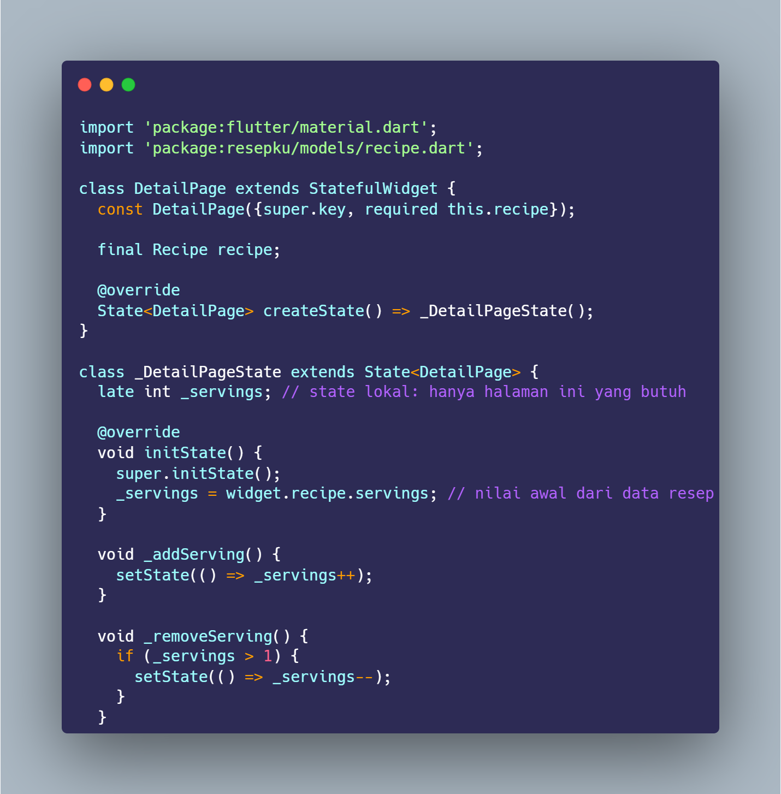
-
DetailPage extends StatefulWidgetdenganfinal Recipe recipe— resep yang dipilih dikirim lewat constructor dariRecipeTile. -
late int _servings;— state lokal yang hanya dibutuhkan halaman ini. -
initState()— dipanggil sekali saat State dibuat; mengisi_servings = widget.recipe.servingssebagai nilai awal (empat porsi untuk Margherita). -
_addServing()—setState(() => _servings++)menambah porsi dan memicu rebuild. -
_removeServing()— mengurangi porsi hanya bila_servings > 1, juga lewatsetState.
_servings dan
fungsi _addServing/_removeServing dari
langkah sebelumnya dipakai langsung oleh tombol dan teks pada
build().
Method build() menyusun tampilan dari data resep
dan nilai _servings.
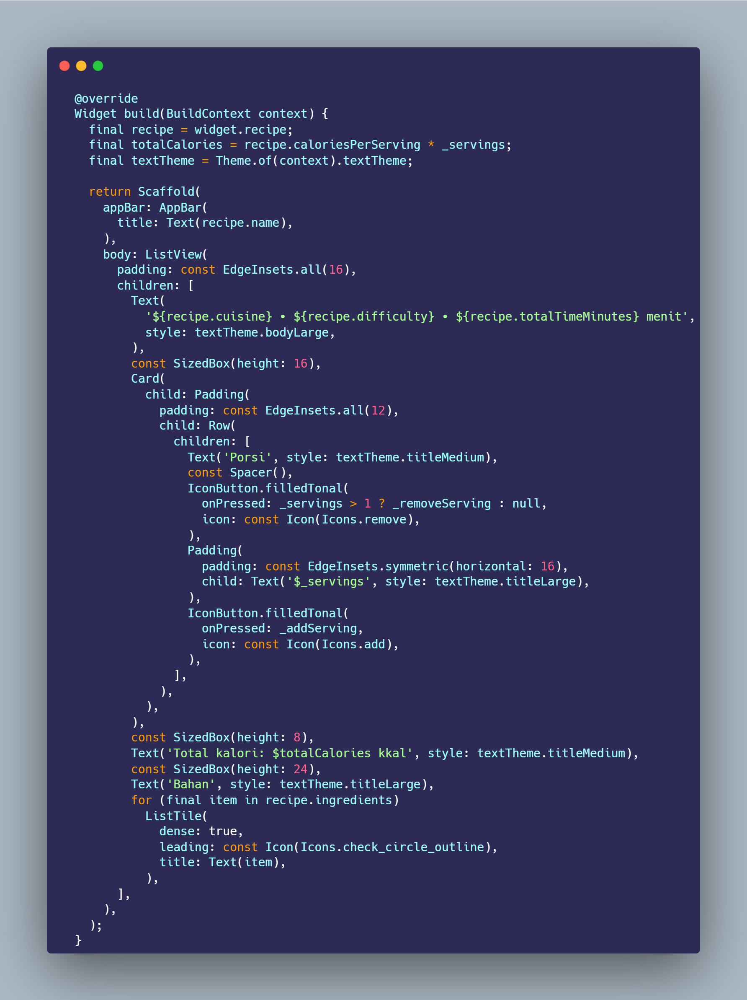
-
final totalCalories = recipe.caloriesPerServing * _servings;— dihitung ulang setiap rebuild, sehingga selalu mengikuti jumlah porsi. -
Text('${recipe.cuisine} • ${recipe.difficulty} • ${recipe.totalTimeMinutes} menit')— ringkasan resep. -
CardberisiRow: teks "Porsi",Spacer, tombolIconButton.filledTonalberikonIcons.remove, teks'$_servings', dan tombol berikonIcons.add. -
onPressed: _servings > 1 ? _removeServing : nullpada tombol −. BilaonPressedbernilainull, Flutter menampilkan tombol dalam keadaan nonaktif. -
Text('Total kalori: $totalCalories kkal')dan daftar bahan memakaifor (final item in recipe.ingredients) ListTile(...).
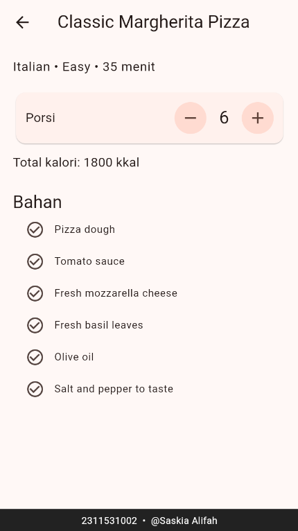
Porsi awal diambil dari widget.recipe.servings pada
initState(), yaitu 4 untuk Margherita. Setiap tap
tombol + memanggil _addServing() yang menjalankan
setState(() => _servings++), sehingga dua tap
menghasilkan porsi 6. Total kalori dihitung ulang pada
build() dengan
recipe.caloriesPerServing * _servings, yaitu 300 ×
6 = 1800 kkal, sesuai nilai yang diminta
Checkpoint 1. Angka berubah seketika karena
setState() memicu build() berjalan
ulang.
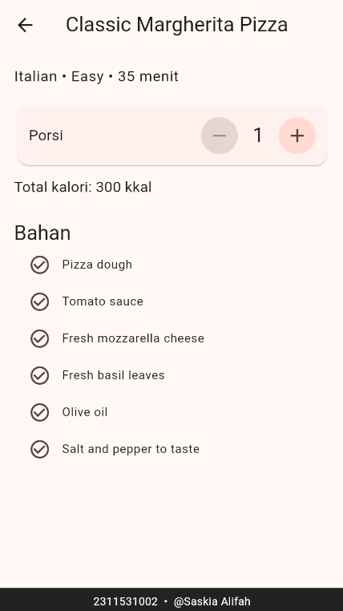
Ketika _servings bernilai 1, ekspresi
_servings > 1 ? _removeServing : null
menghasilkan null. Flutter otomatis menampilkan
IconButton dengan
onPressed: null sebagai tombol nonaktif berwarna
abu-abu, sehingga porsi tidak pernah kurang dari 1 dan total
kalori tidak pernah bernilai nol atau negatif.
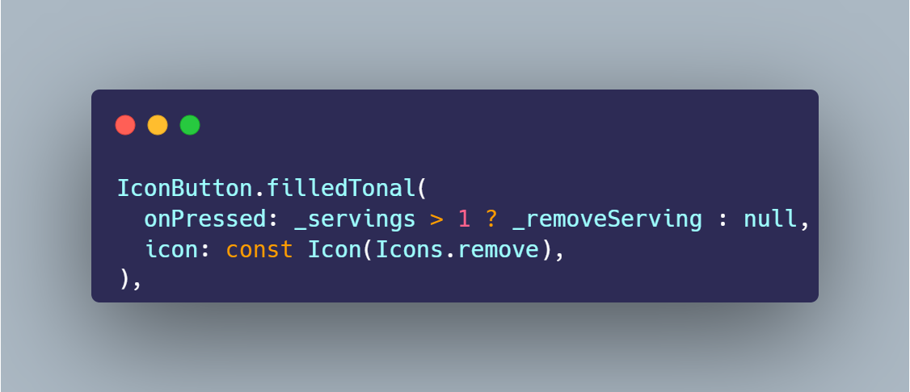
Baris yang menonaktifkan tombol adalah
onPressed: _servings > 1 ? _removeServing : null. Selama _servings lebih dari 1, tombol memanggil
_removeServing; ketika bernilai 1,
onPressed menjadi null dan tombol
nonaktif. Pemeriksaan if (_servings > 1) di
dalam _removeServing() hanya pengaman tambahan.
Sebelum memakai Provider, cara paling sederhana dicoba terlebih
dahulu: setiap RecipeTile menyimpan status favoritnya
sendiri dengan setState(). Tujuannya melihat langsung
keterbatasan state lokal ketika satu data dibutuhkan di banyak
tempat.
RecipeTile dari A.4, dan
DetailPage dari A.5 tetap dibuka lewat
onTap yang sama.
Isi recipe_tile.dart diganti sepenuhnya dengan
versi yang menyimpan status favorit di dalam tile.
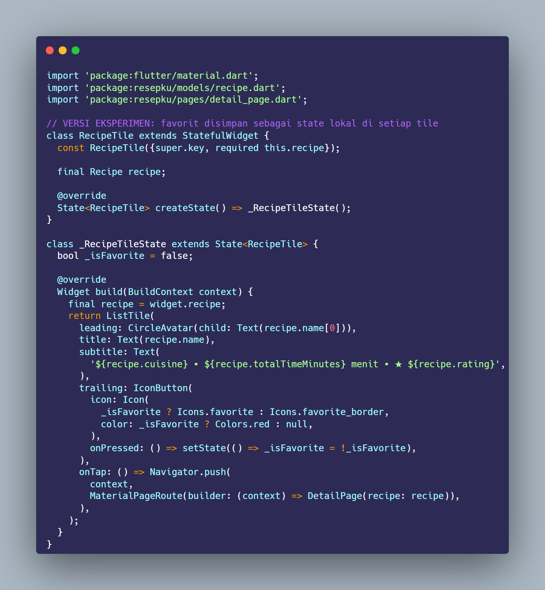
-
RecipeTilekiniStatefulWidgetdengan_RecipeTileState. -
bool _isFavorite = false;— status favorit milik satu tile saja. -
trailing: IconButton(...)— ikonIcons.favoriteberwarna merah bila favorit, danIcons.favorite_borderbila tidak. -
onPressed: () => setState(() => _isFavorite = !_isFavorite)— membalik nilai dan membangun ulang tile itu. -
Data resep diakses lewat
widget.recipe, karena sekarang berada di dalam class State.
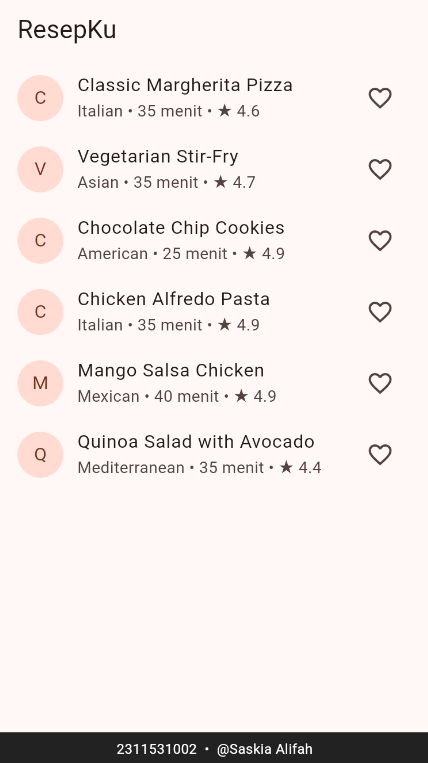
Setelah hot reload, setiap RecipeTile memiliki
IconButton pada properti trailing.
Seluruh ikon masih berupa hati kosong
(Icons.favorite_border) karena
_isFavorite pada setiap
_RecipeTileState diawali dengan false.
Tile kini berupa StatefulWidget agar dapat
menyimpan nilai tersebut.
Pertanyaan 1 — apakah ikon hati berubah? Ya,
berubah menjadi merah dan terisi, karena
onPressed memanggil setState di
_RecipeTileState sehingga tile tersebut dibangun
ulang dengan nilai _isFavorite yang baru. Hanya
tile yang di-tap yang berubah, tile lain tidak ikut terpengaruh
karena masing-masing memiliki State sendiri.
Pertanyaan 2 — dapatkah jumlah favorit ditampilkan di judul
AppBar HomePage?
Tidak dapat. _isFavorite adalah field private di
_RecipeTileState dan tiap tile memiliki salinannya
sendiri. HomePage berada di atas tile dan tidak
punya akses ke State milik widget anaknya, serta tidak ada
daftar gabungan yang dapat dihitung. Terlihat pada gambar, judul
AppBar tetap ResepKu tanpa angka.
Pertanyaan 3 — bagaimana detail tahu resep itu
favorit?
Tidak dapat tahu. DetailPage hanya menerima
recipe lewat constructor dan status favorit tidak
ikut terkirim karena hidup di tile yang terpisah. Walaupun
dikirim lewat parameter tambahan, perubahan dari halaman detail
tidak akan kembali ke tile tanpa callback, sehingga cara ini
cepat menjadi rumit.
Package provider ditambahkan ke project lewat
terminal.
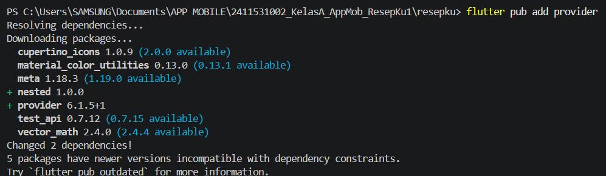
-
Pastikan terminal berada di folder project (
cd resepku), lalu jalankanflutter pub add provider— perintah ini menambahkanproviderke bagiandependenciespadapubspec.yamlsekaligus mengunduhnya. -
Baris
provider: ^...padapubspec.yamlmenjadi bukti package terpasang.
FavoriteProvider menggunakan model
Recipe (A.2) dan menggantikan
_isFavorite milik tile pada percobaan Bagian B.
State global berupa daftar favorit disimpan pada class yang
meng-extend ChangeNotifier.
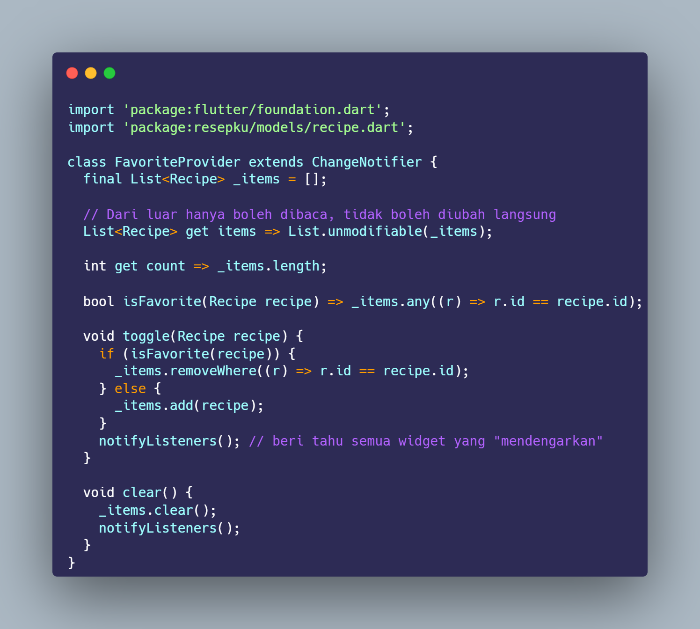
-
extends ChangeNotifier— memberi class kemampuan menyimpan daftar listener dan memanggilnotifyListeners(). -
final List<Recipe> _items = [];— daftar favorit yang bersifat private. -
List<Recipe> get items => List.unmodifiable(_items);— dari luar data hanya dapat dibaca, sehingga setiap perubahan wajib melaluitoggle()atauclear()dannotifyListeners()tidak terlewat. -
int get count => _items.length;— jumlah favorit untuk badge. -
bool isFavorite(Recipe recipe)— memakai_items.any((r) => r.id == recipe.id). Resep dibandingkan berdasarkanid, bukan objeknya, karena pada Modul 8 objekRecipeakan dibuat ulang dari JSON. -
toggle(Recipe recipe)— menghapus resep bila sudah favorit, menambahkannya bila belum, lalu memanggilnotifyListeners()untuk memberi tahu semua widget yang mendengarkan. -
clear()— mengosongkan daftar lalunotifyListeners().
main.dart versi awal
dari A.4 diperluas: ResepKuApp tidak berubah,
tetapi kini berada di dalam MultiProvider.
Provider dipasang di main(), di atas
MaterialApp, agar semua halaman (route) dapat
mengakses FavoriteProvider.
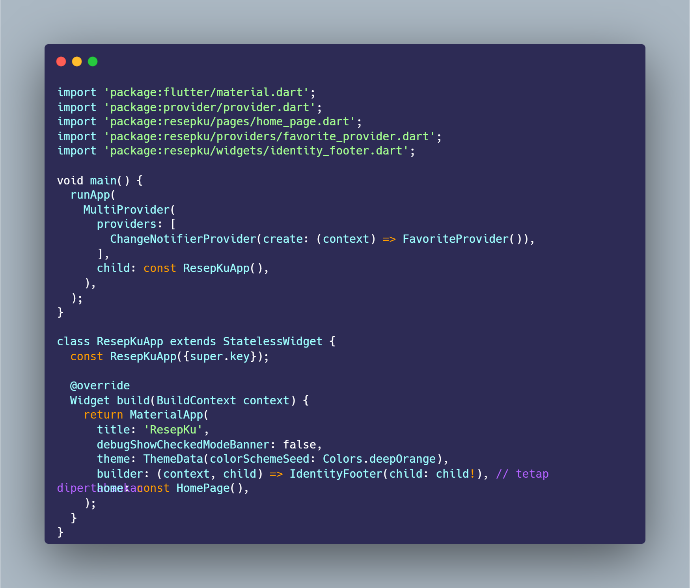
-
MultiProvider(providers: [...], child: const ResepKuApp())— membungkus seluruh aplikasi.MultiProviderdipilih agar provider lain mudah ditambahkan, misalnya pada Latihan 1. -
ChangeNotifierProvider(create: (context) => FavoriteProvider())— membuat satu objekFavoriteProvideryang dibagikan ke semua widget di bawahnya. -
Import dan baris
builder: (context, child) => IdentityFooter(child: child!)tetap ada, sehingga footer identitas tidak hilang.
Setelah mengubah main.dart, wajib
hot restart (Shift + R). Hot reload tidak
menjalankan ulang main(), sehingga provider belum
terpasang dan muncul ProviderNotFoundException.
toggle() dan
isFavorite() berasal dari
FavoriteProvider (C.1), yang disediakan oleh
main.dart (C.2). Versi ini menggantikan
_isFavorite lokal dari Bagian B.
RecipeTile kembali menjadi
StatelessWidget. Data favorit tidak lagi disimpan
di tile, melainkan diambil dari FavoriteProvider.
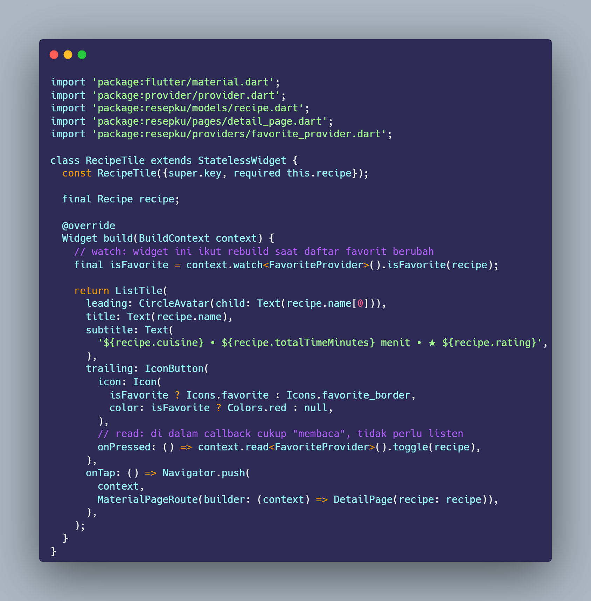
-
final isFavorite = context.watch<FavoriteProvider>().isFavorite(recipe);—watchdi dalambuild()membuat tile ikut rebuild ketika daftar favorit berubah. -
icon: Icon(isFavorite ? Icons.favorite : Icons.favorite_border)dancolor: isFavorite ? Colors.red : null— ikon dan warna mengikuti data dari provider. -
onPressed: () => context.read<FavoriteProvider>().toggle(recipe)—readdi dalam callback hanya memanggil method tanpa mendengarkan perubahan.
Aturan utamanya: context.watch di
build(), context.read di callback
seperti onPressed dan onTap.
DetailPage dari A.5
dilengkapi, dan FavoriteProvider yang sama dengan
milik RecipeTile (C.3) sehingga status favorit
konsisten di dua halaman.
Halaman detail mendapat tombol favorit di AppBar yang membaca provider yang sama dengan daftar resep.
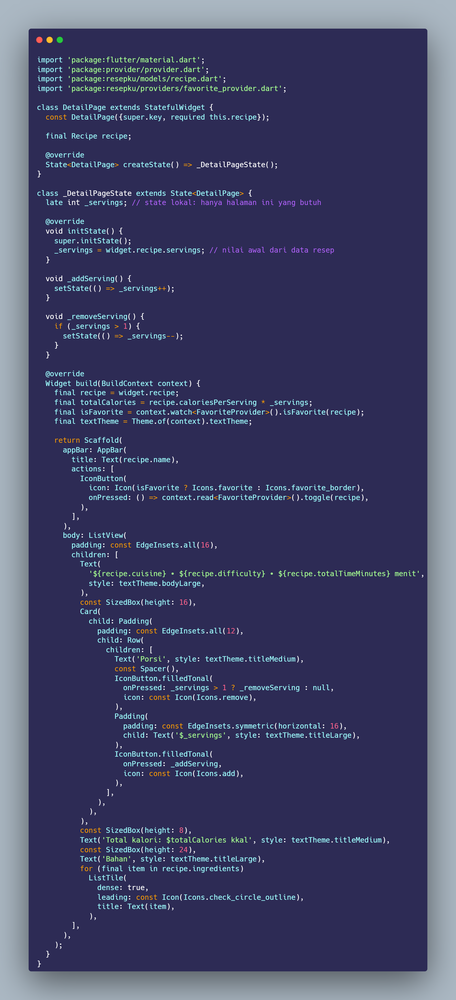
-
Import
package:provider/provider.dartdanpackage:resepku/providers/favorite_provider.dart. -
final isFavorite = context.watch<FavoriteProvider>().isFavorite(recipe);— diletakkan tepat setelah baristotalCalories. -
actions: [IconButton(...)]pada AppBar — ikon hati terisi bila favorit,onPressedmemanggilcontext.read<FavoriteProvider>().toggle(recipe).
Halaman ini kini memakai dua jenis state sekaligus:
_servings sebagai state lokal
(setState) dan favorit sebagai state global
(Provider). Kombinasi seperti ini wajar pada aplikasi nyata.
favorite.items dan
favorite.count berasal dari
FavoriteProvider (C.1).
Halaman Favorit memakai Consumer, bentuk widget
dari context.watch.
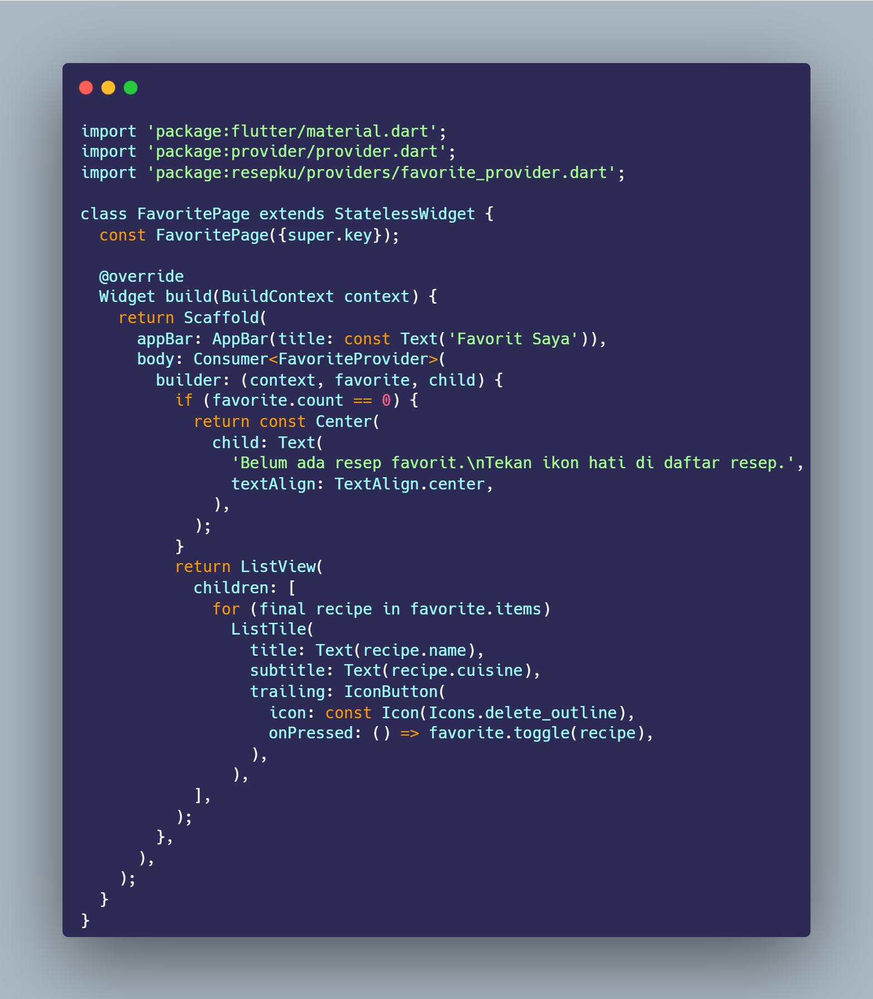
-
Consumer<FavoriteProvider>(builder: (context, favorite, child) {...})— fungsibuilderdijalankan ulang setiap kalinotifyListeners()dipanggil. -
if (favorite.count == 0)— menampilkanCenterberisi "Belum ada resep favorit. Tekan ikon hati di daftar resep." -
Bila ada data:
ListViewdenganfor (final recipe in favorite.items) ListTile(...)yang menampilkan nama dan masakan. -
trailing: IconButton(icon: Icons.delete_outline, onPressed: () => favorite.toggle(recipe))— menghapus resep dari favorit.
Halaman ini belum dapat dibuka dari mana pun; tombolnya dibuat pada langkah berikutnya.
FavoritePage dari langkah C.5 dan membaca
count dari FavoriteProvider (C.1).
Widget Badge dari Material 3 menampilkan angka
kecil di atas ikon. Dibuat sebagai widget terpisah agar hanya
bagian ini yang rebuild ketika jumlah favorit berubah.
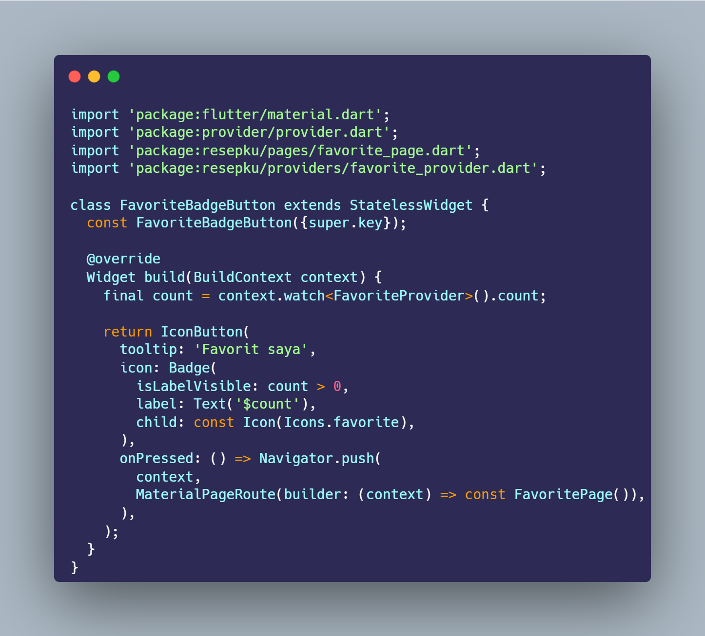
-
final count = context.watch<FavoriteProvider>().count;— angka badge ikut berubah. -
Badge(isLabelVisible: count > 0, label: Text('$count'), child: const Icon(Icons.favorite))— badge hanya terlihat bila ada favorit. -
onPressed: () => Navigator.push(context, MaterialPageRoute(builder: (context) => const FavoritePage()))— membuka halaman Favorit (C.5).
HomePage versi awal
(A.4) dilengkapi dengan widget dari langkah sebelumnya.
Terakhir, badge dipasang pada AppBar halaman Home.
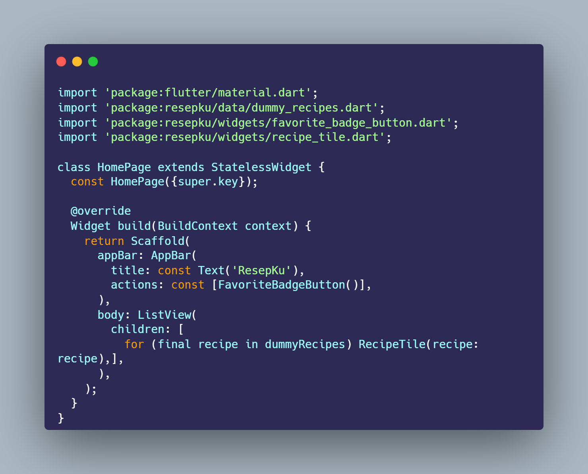
Ditambahkan
import
'package:resepku/widgets/favorite_badge_button.dart';
dan parameter
actions: const [FavoriteBadgeButton()] pada
AppBar. Badge ditempatkan di sisi kanan AppBar
dan dapat dibuat const karena widget-nya
mengambil datanya sendiri dari provider.
Setelah seluruh file selesai, dilakukan hot restart lalu enam skenario pada Langkah C.7 dijalankan berurutan.
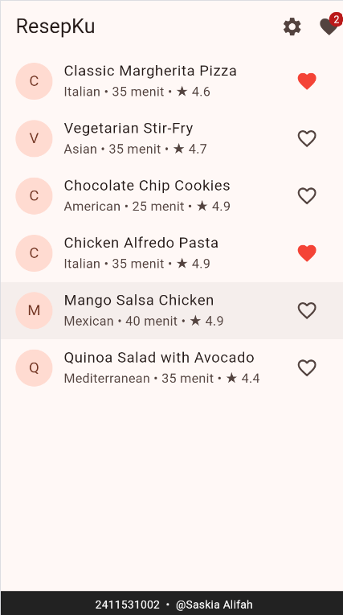
Ikon hati pada Classic Margherita Pizza dan Chicken Alfredo
Pasta berubah merah, dan badge di AppBar menunjukkan angka
2. Setiap tap memanggil
context.read<FavoriteProvider>().toggle(recipe)
yang menambahkan resep ke _items lalu memanggil
notifyListeners(). Karena
RecipeTile dan
FavoriteBadgeButton memakai
context.watch, keduanya ikut dibangun ulang.
Berbeda dengan eksperimen Bagian B, jumlah favorit kini dapat
tampil di AppBar karena datanya tersimpan di provider.
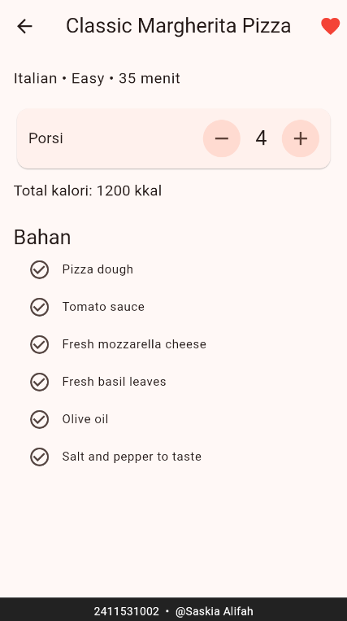
Halaman detail mengetahui bahwa resep ini favorit tanpa ada data
yang dikirim lewat constructor, karena baris
context.watch<FavoriteProvider>().isFavorite(recipe)
membaca provider yang sama dengan daftar resep. Pada Bagian B
hal ini tidak mungkin dilakukan.
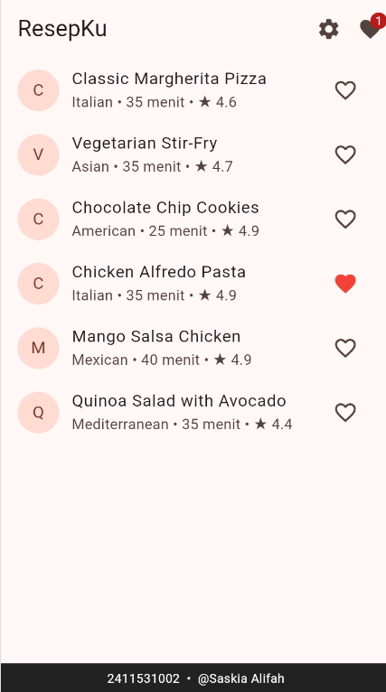
Perubahan yang dilakukan di halaman detail langsung tercermin di
Home tanpa mekanisme tambahan. toggle() menghapus
Margherita dari _items (removeWhere
berdasarkan id) lalu memanggil
notifyListeners(), sehingga ikon Margherita kembali
kosong dan badge menjadi 1.
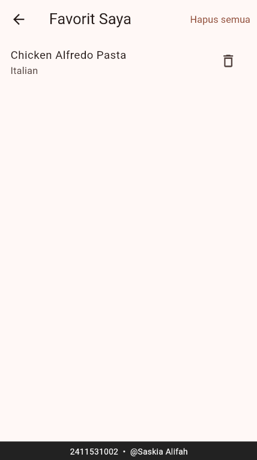
Halaman Favorit hanya memuat Alfredo, sesuai kondisi terakhir
daftar favorit. Halaman dibuka lewat
FavoriteBadgeButton dengan
Navigator.push, lalu
Consumer<FavoriteProvider> menyusun
ListView dari favorite.items. Setiap
baris menampilkan nama resep, jenis masakan, dan ikon tong
sampah yang memanggil favorite.toggle(recipe).
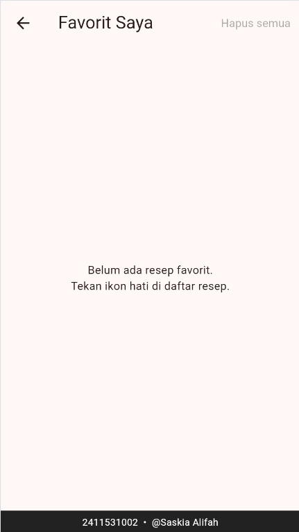
Setelah Alfredo dihapus lewat ikon tong sampah,
favorite.count menjadi 0 sehingga
Consumer menampilkan pesan
“Belum ada resep favorit”. Setelah kembali ke Home,
badge tidak terlihat lagi karena
isLabelVisible: count > 0 bernilai
false.
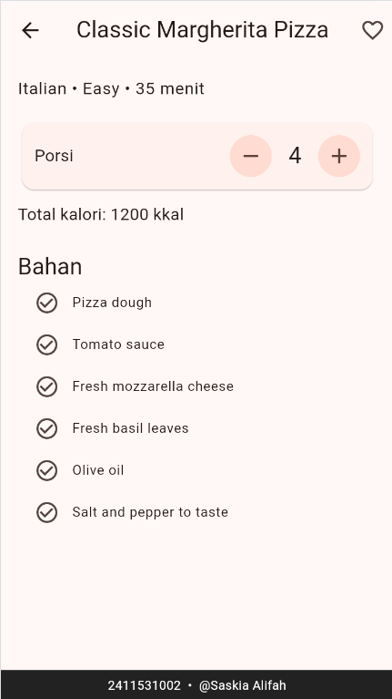
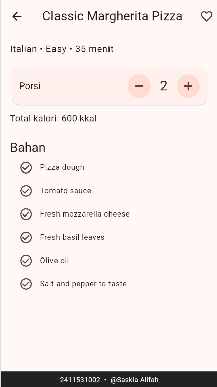
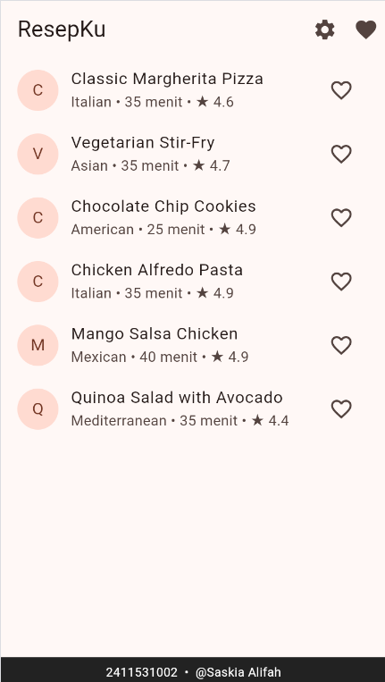
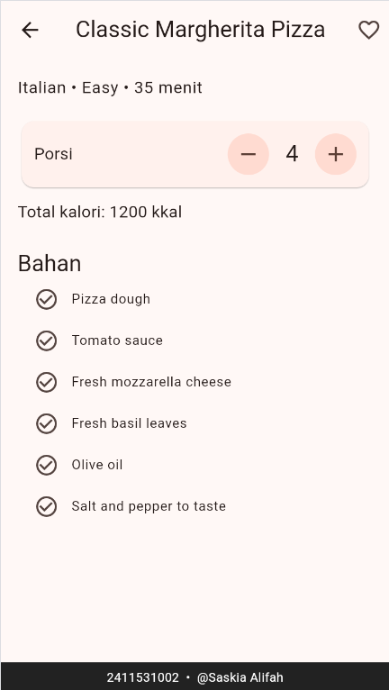
Porsi kembali ke nilai awal setelah halaman ditutup dan dibuka
lagi, karena _servings adalah state lokal milik
_DetailPageState. Ketika halaman ditutup, objek
State dibuang bersama datanya, dan membuka halaman lagi membuat
State baru yang menjalankan initState() dengan
widget.recipe.servings. Sebaliknya, daftar favorit
tidak hilang karena disimpan di provider yang berada di atas
MaterialApp.
Tabel uji Langkah C.7
| No | Skenario | Hasil yang diharapkan | Bukti (Gambar) | Sesuai? |
|---|---|---|---|---|
| 1 | Tap ikon hati pada Margherita dan Alfredo di Home | Ikon berwarna merah, badge menunjukkan angka 2 | D.C-9 | ✓ |
| 2 | Buka detail Margherita | Ikon hati di AppBar terisi | D.C-10 | ✓ |
| 3 | Di halaman detail, tap ikon hati, lalu kembali ke Home | Ikon Margherita kosong, badge menunjukkan angka 1 | D.C-11, D.C-12 | ✓ |
| 4 | Tap badge di AppBar | Halaman Favorit hanya berisi Alfredo | D.C-13 | ✓ |
| 5 | Hapus Alfredo dari halaman Favorit, lalu kembali | Muncul pesan “Belum ada resep favorit”, badge hilang | D.C-14 | ✓ |
| 6 | Ubah porsi menjadi 2, kembali ke Home, lalu buka lagi resep yang sama | Porsi kembali ke nilai awal, karena state lokal ikut dibuang ketika halaman ditutup | D.C-15 s.d. D.C-18 | ✓ |
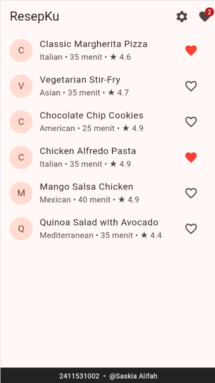
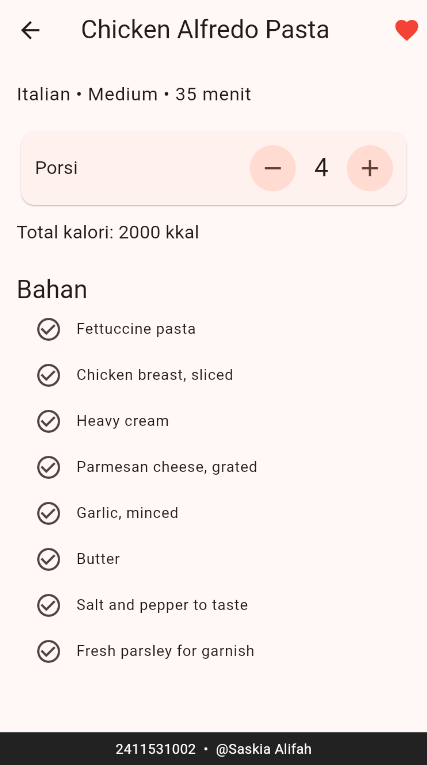
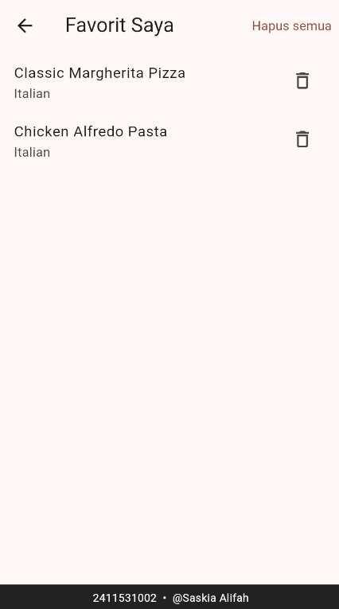
Ketiga screenshot menunjukkan data yang sama dibaca dari tiga
tempat berbeda. Badge pada Home dibangun oleh
FavoriteBadgeButton lewat
context.watch<FavoriteProvider>().count. Ikon
hati pada detail dibangun dari isFavorite(recipe).
Daftar pada halaman Favorit dibangun oleh
Consumer dari favorite.items. Semuanya
konsisten karena hanya ada satu objek
FavoriteProvider yang dipasang di atas
MaterialApp.
Pertanyaan 1 — jawaban tiga pertanyaan Langkah B.2.
Ikon hati berubah menjadi merah dan terisi karena
onPressed memanggil setState pada
_RecipeTileState, sehingga tile yang bersangkutan
dibangun ulang dengan nilai _isFavorite yang baru.
Jumlah resep favorit tidak dapat ditampilkan di AppBar
HomePage, karena _isFavorite adalah
field private di _RecipeTileState milik masing-masing
tile, sedangkan HomePage berada di atasnya dan tidak
dapat membaca State milik widget anak. Halaman detail juga tidak
dapat mengetahui status favorit karena hanya menerima
recipe lewat constructor, sementara status favorit
hidup di tile yang terpisah. Ketiganya menunjukkan bahwa state
lokal tidak dapat dibagikan ke widget lain.
Pertanyaan 2 — mengapa jumlah porsi tetap memakai
setState()?
Jumlah porsi hanya dibutuhkan oleh satu halaman, yaitu halaman
detail, sehingga cukup disimpan sebagai state lokal di
_DetailPageState. Hasil skenario 6 membuktikannya:
ketika halaman ditutup dan dibuka lagi, porsi kembali ke nilai
awal karena State dibuang bersama halamannya, dan itu perilaku
yang diinginkan karena porsi hanyalah pilihan sementara. Bila
dimasukkan ke Provider, data sementara itu akan bertahan tanpa
alasan dan dapat memicu rebuild widget lain yang tidak
membutuhkannya. Favorit sebaliknya harus bertahan dan dibaca
banyak halaman, sehingga disimpan di Provider.
Pertanyaan 3 — memindahkan
ChangeNotifierProvider ke dalam
HomePage.
Sebagai percobaan sementara, MultiProvider dihapus
dari main() dan
ChangeNotifierProvider dipasang membungkus
Scaffold pada HomePage.
MaterialApp kini hanya berada di dalam
HomePage.
Kode diubah sementara untuk melihat akibat posisi provider pada widget tree.
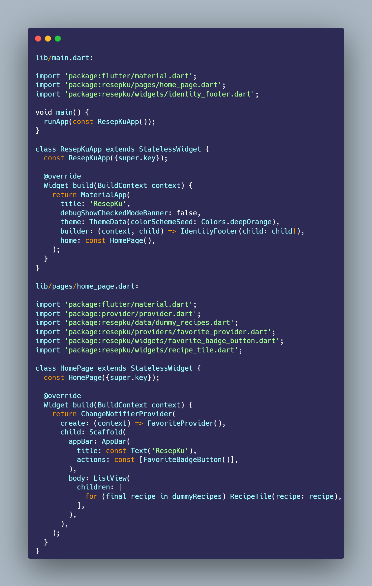
-
Pada
main.dart,runAppdipanggil langsung denganconst ResepKuApp(), tanpaMultiProvider. -
Pada
home_page.dart,return ChangeNotifierProvider(create: (context) => FavoriteProvider(), child: Scaffold(...)), lengkap dengan importproviderdanfavorite_provider.
Halaman Home dan tombol hati masih berfungsi, tetapi membuka
halaman Favorit menghasilkan
ProviderNotFoundException.
Penyebabnya adalah posisi provider pada widget
tree. Navigator.push menempatkan halaman baru
sebagai route yang sejajar dengan HomePage, bukan
sebagai anaknya. Provider yang dipasang di dalam
HomePage hanya mencakup subtree
HomePage, sehingga FavoritePage (dan
juga DetailPage) berada di luar jangkauannya dan
context.watch tidak menemukan provider ke atas.
Karena itu provider harus dipasang di atas
MaterialApp. Setelah percobaan, kode dikembalikan
seperti semula (C.2 dan C.6) lalu dilakukan hot restart.
Halaman Pengaturan ditambahkan dengan
SwitchListTile "Mode gelap". Ketika switch aktif,
seluruh aplikasi berganti ke tema gelap. Mode tema disimpan di
ThemeProvider sehingga dapat dibaca oleh
MaterialApp di tingkat paling atas.
State mode tema disimpan di class ChangeNotifier,
mengikuti pola FavoriteProvider.
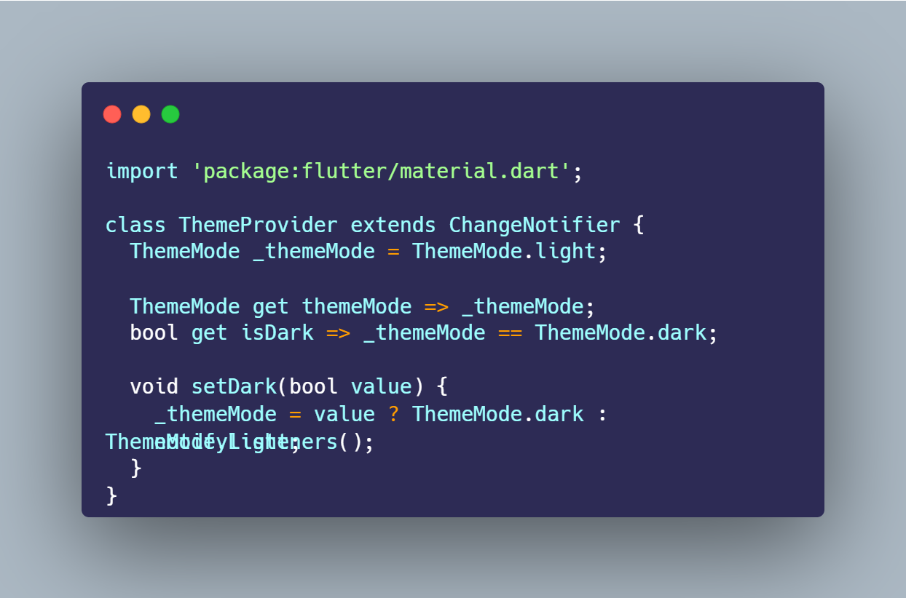
-
ThemeMode _themeMode = ThemeMode.light;— mode awal terang. -
ThemeMode get themeModedanbool get isDark— getter untuk dibacaMaterialAppdan switch. -
void setDark(bool value)— mengubah mode menjadi gelap atau terang lalu memanggilnotifyListeners(), sehingga widget yang mendengarkan ikut rebuild.
MultiProvider dari
C.2 diperluas dengan provider kedua, dan
ThemeProvider berasal dari langkah sebelumnya.
ThemeProvider didaftarkan pada
MultiProvider, lalu
MaterialApp membaca mode tema darinya.
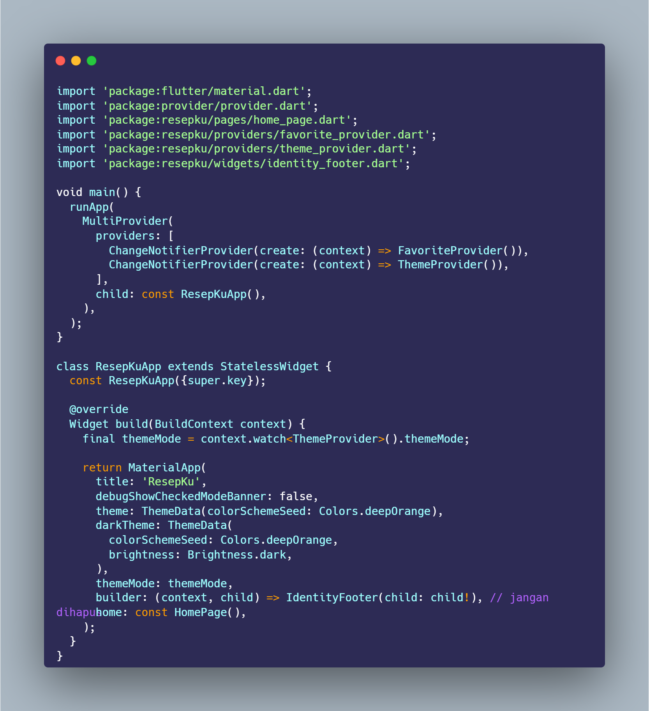
-
ChangeNotifierProvider(create: (context) => ThemeProvider())— ditambahkan di sampingFavoriteProviderpadaMultiProvider. -
final themeMode = context.watch<ThemeProvider>().themeMode;— memakai watch, bukan read, karenaMaterialAppharus dibangun ulang setiap kali mode berubah. -
darkTheme: ThemeData(colorSchemeSeed: Colors.deepOrange, brightness: Brightness.dark)— tema gelap dengan warna dasar yang sama. -
themeMode: themeMode— memilih tema yang aktif. - Baris
builderfooter tetap ada.
ThemeProvider dari langkah 1, dan perubahannya
diterima oleh MaterialApp (langkah 2).
Halaman Pengaturan berisi satu switch untuk mengubah mode tema.
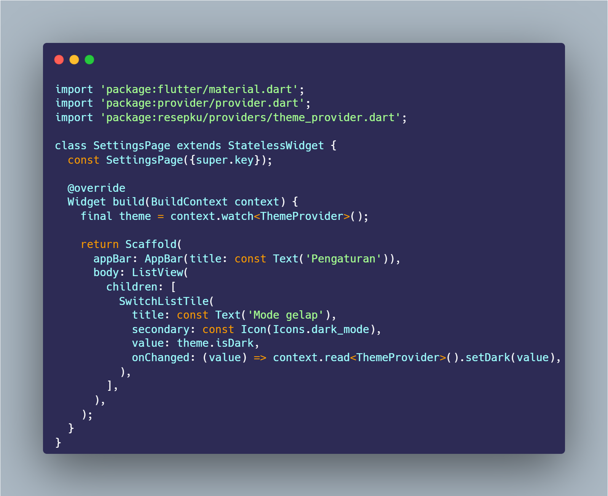
-
final theme = context.watch<ThemeProvider>();— membaca status mode untuk menampilkan posisi switch. -
SwitchListTile(title: const Text('Mode gelap'), secondary: const Icon(Icons.dark_mode), value: theme.isDark, ...)— baris switch. -
onChanged: (value) => context.read<ThemeProvider>().setDark(value)— read dipakai di callback karena hanya memanggil method.
SettingsPage dari langkah 3 dan berdampingan dengan
badge dari C.6.
Tombol ikon pengaturan ditambahkan di samping badge favorit.
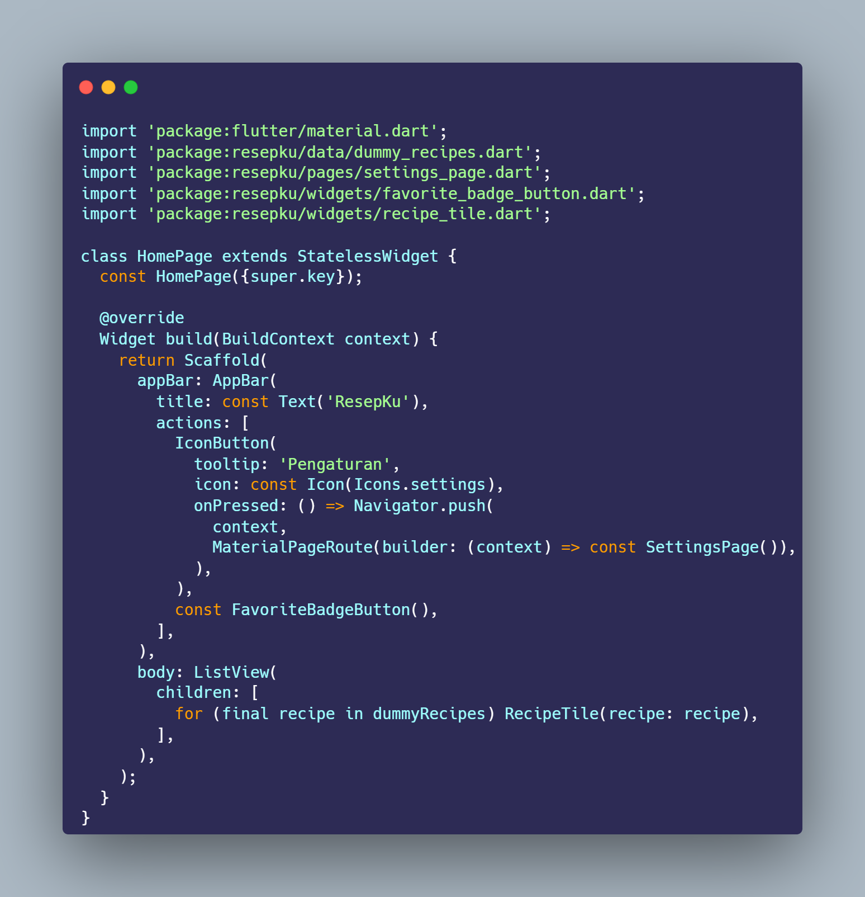
-
import 'package:resepku/pages/settings_page.dart';ditambahkan. -
actionskini berisi dua widget:IconButton(icon: Icons.settings, tooltip: 'Pengaturan', onPressed: () => Navigator.push(...SettingsPage()))danconst FavoriteBadgeButton(). Kataconstdihapus dari daftaractionskarena berisi widget yang tidak konstan.
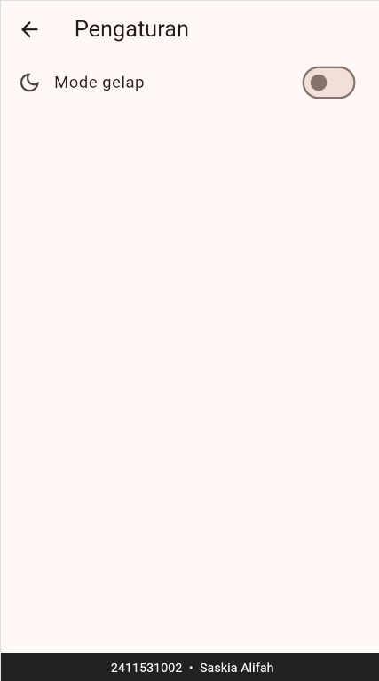
Ikon pengaturan di AppBar membuka SettingsPage.
Switch tampil mati karena theme.isDark bernilai
false (ThemeProvider diawali dengan
ThemeMode.light), sehingga seluruh aplikasi masih
memakai tema terang.
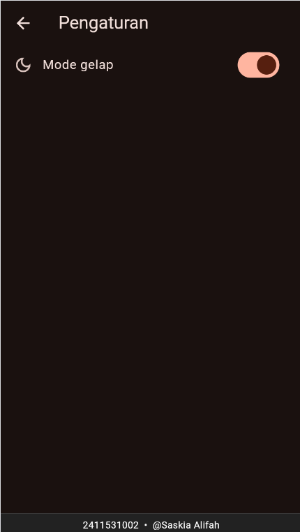
Saat switch digeser, onChanged memanggil
context.read<ThemeProvider>().setDark(true)
yang mengubah _themeMode menjadi
ThemeMode.dark lalu memanggil
notifyListeners().
MaterialApp mendengarkan lewat
context.watch, sehingga dibangun ulang dan memakai
darkTheme. Footer identitas tetap tampil karena
baris builder tidak dihapus.
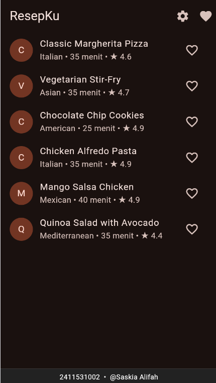
Home ikut berubah menjadi gelap tanpa ada kode tambahan di
HomePage, karena themeMode dibaca oleh
MaterialApp yang berada di atas semua route.
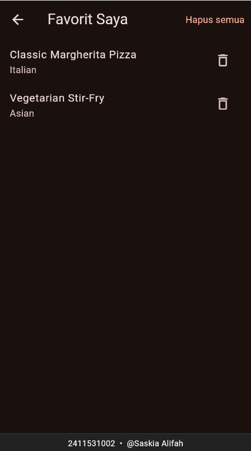
Halaman Favorit, yang dibuka lewat Navigator.push,
juga gelap. Hal ini membuktikan mode gelap berlaku pada seluruh
aplikasi (Home, Detail, Favorit, dan Pengaturan), bukan hanya
pada halaman Pengaturan.
clear() berasal dari
FavoriteProvider (C.1), dan halaman ini dibuka dari
badge pada C.6.
Di AppBar halaman Favorit ditambahkan tombol "Hapus semua" yang meminta konfirmasi lebih dulu dan nonaktif ketika daftar kosong.
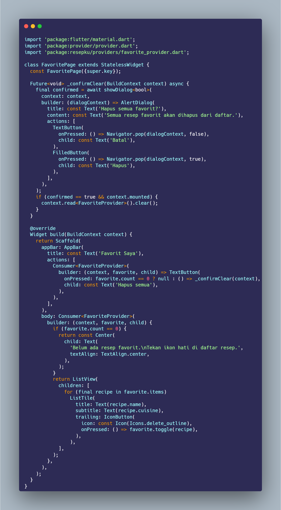
-
Future<void> _confirmClear(BuildContext context) async— menampilkan dialog denganshowDialog<bool>dan menunggu pilihan pengguna. -
AlertDialogberjudul "Hapus semua favorit?" dengan dua tombol:TextButton"Batal" yang menutup dialog denganfalse, danFilledButton"Hapus" dengantrue. -
if (confirmed == true && context.mounted) context.read<FavoriteProvider>().clear();—clear()hanya dijalankan bila pengguna menekan "Hapus". Pemeriksaancontext.mountedmemastikan halaman masih aktif setelah dialog ditutup. -
actions: [Consumer<FavoriteProvider>(...)]pada AppBar — dibungkusConsumeragar tombol ikut berubah saat jumlah favorit berubah. -
onPressed: favorite.count == 0 ? null : () => _confirmClear(context)— bernilainullsaat kosong, sehingga tombol "Hapus semua" nonaktif.
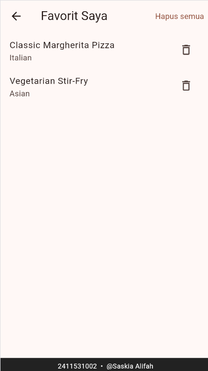
Selama favorite.count tidak nol,
onPressed tombol berisi
() => _confirmClear(context) sehingga tombol
aktif dan dapat ditekan.
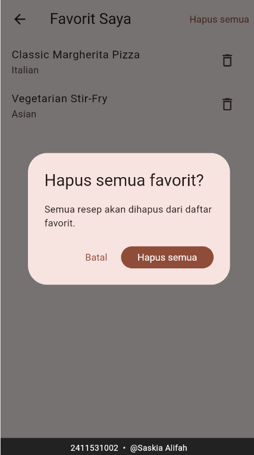
Menekan tombol memunculkan AlertDialog lewat
showDialog<bool>. Penghapusan belum terjadi
pada tahap ini: pilihan Batal menutup dialog dengan
nilai false tanpa mengubah daftar, sedangkan
pilihan Hapus menutup dialog dengan nilai
true.
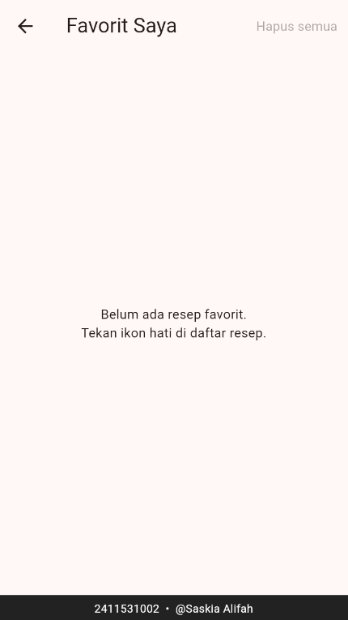
Setelah “Hapus” dipilih, clear() mengosongkan
_items dan memanggil
notifyListeners(). Halaman menampilkan pesan
kosong, dan karena favorite.count == 0 maka
onPressed bernilai null sehingga
tombol “Hapus semua” berubah abu-abu (nonaktif). Tombol ikut
berubah otomatis karena dibungkus Consumer.
Pada Home, semua ikon hati kembali kosong dan badge tidak tampil
lagi, karena RecipeTile dan
FavoriteBadgeButton membaca
FavoriteProvider yang sama dengan halaman Favorit.
ThemeProvider, dan tombol "Hapus semua"
meminta konfirmasi serta nonaktif saat daftar kosong.
Pertanyaan utama praktikum ini adalah di mana state sebaiknya disimpan. Hasil praktikum menjawabnya dengan dua prinsip berbeda yang dipakai berdampingan pada satu aplikasi.
Ringkasan pemenuhan checkpoint dan latihan
| Komponen | Yang dibuktikan | Bukti (Gambar) | Status |
|---|---|---|---|
| Checkpoint 1 (Bagian A) | Porsi 6 menghasilkan 1800 kkal; tombol − nonaktif pada porsi 1 beserta baris kodenya | D.A-11, D.A-12, D.A-13 | ✓ |
| Pengamatan Bagian B | Ikon berubah, AppBar tidak dapat menghitung favorit, detail tidak tahu status favorit | D.B-2, D.B-3 | ✓ |
| Tabel uji C.7 | Keenam skenario sesuai | D.C-9 s.d. D.C-18 | ✓ |
| Checkpoint 2 | Home badge 2, Detail hati terisi, dan halaman Favorit dengan footer terlihat | D.C-19, D.C-20, D.C-21 | ✓ |
| Pertanyaan analisis | Tiga pertanyaan dijawab dengan alasan, termasuk percobaan provider di HomePage | E.1-1 | ✓ |
| Latihan 1 | Seluruh aplikasi berganti tema | E.2-5 s.d. E.2-8 | ✓ |
| Latihan 2 | Ada konfirmasi; tombol nonaktif saat daftar kosong | E.3-2 s.d. E.3-5 | ✓ |
Jumlah porsi disimpan sebagai state lokal. Pada
Bagian A, jumlah porsi hanya dibutuhkan oleh halaman detail,
sehingga disimpan sebagai field _servings di
_DetailPageState dan diubah dengan
setState(). Checkpoint 1 membuktikan porsi 6
menghasilkan 1800 kkal (6 × 300), dan tombol − nonaktif pada porsi
1 berkat
onPressed: _servings > 1 ? _removeServing : null.
Skenario 6 menunjukkan porsi kembali ke nilai awal ketika halaman
ditutup, yang wajar untuk data sementara.
Favorit tidak cukup disimpan sebagai state lokal.
Eksperimen Bagian B memperlihatkan bahwa bila status favorit
disimpan di setiap tile, ikon hati memang berubah, tetapi AppBar
tidak dapat menghitung jumlah favorit dan halaman detail tidak
dapat mengetahui statusnya. Data tersebut terkunci di dalam
_RecipeTileState milik masing-masing tile.
Favorit disimpan di Provider. Pada Bagian C,
daftar favorit dipindahkan ke
FavoriteProvider (ChangeNotifier) yang
dipasang di atas MaterialApp.
RecipeTile, DetailPage,
FavoriteBadgeButton, dan
FavoritePage membaca data yang sama, sehingga satu
perubahan langsung tercermin di semua halaman.
context.watch dipakai di build() dan
Consumer pada halaman Favorit supaya tampilan ikut
berubah, sedangkan context.read dipakai pada callback
karena hanya memanggil toggle(). Keenam skenario uji
C.7 sesuai, termasuk badge yang bertambah, berkurang, dan hilang
saat daftar kosong.
Pertanyaan analisis 3 menegaskan pentingnya posisi provider:
dengan provider di dalam HomePage, halaman yang
dibuka lewat Navigator.push tidak menemukan provider
dan muncul ProviderNotFoundException. Pada Latihan 1,
pola yang sama dipakai untuk ThemeProvider, dan
context.watch pada MaterialApp membuat
seluruh aplikasi berganti tema. Pada Latihan 2,
clear() dijalankan setelah konfirmasi
AlertDialog, dan tombol dinonaktifkan dengan
onPressed: null saat daftar kosong.
Footer identitas yang dipasang lewat builder pada
MaterialApp membuat NIM dan nama terlihat pada semua
halaman dan semua screenshot.
Berdasarkan seluruh tahapan praktikum, diperoleh beberapa kesimpulan penting:
-
State lokal dengan
StatefulWidgetdansetState()cocok untuk data yang hanya dibutuhkan satu widget, seperti jumlah porsi pada halaman detail. Data ini ikut dibuang ketika halaman ditutup. - State lokal tidak cukup ketika satu data dibutuhkan banyak widget dan halaman, karena data di dalam class State tidak dapat dibaca widget lain, seperti terlihat pada eksperimen favorit.
-
Provider menyimpan app state pada class
ChangeNotifier. Setiap perubahan memanggilnotifyListeners()sehingga semua widget yang mendengarkan ikut diperbarui, danMultiProvidermemudahkan penambahan provider baru sepertiThemeProvider. -
context.watchdipakai di dalambuild()untuk ikut rebuild,context.readdipakai di dalam callback, danConsumeradalah bentuk widget dariwatch. -
Provider harus dipasang di atas
MaterialAppagar dapat diakses semua route; bila dipasang di dalam satu halaman, halaman lain yang dibuka lewatNavigator.pushtidak menemukannya. - Satu halaman dapat memakai kedua jenis state sekaligus, dan keputusan penyimpanan didasarkan pada siapa yang membutuhkan data tersebut.
Seluruh source code praktikum ini dapat diakses pada repository Github berikut: